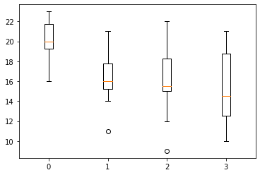
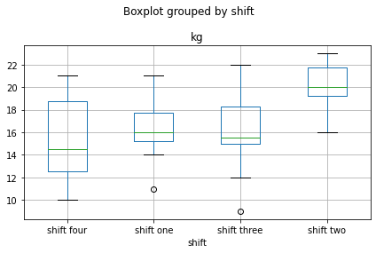
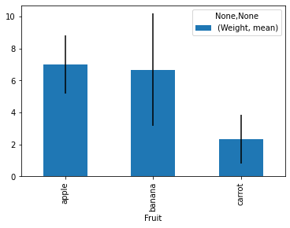
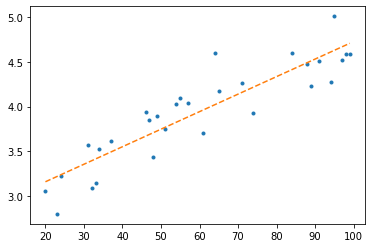

Python Foundations, Lab 5: Practice Visualization¶
Instructor: Wesley Beckner
Contact: wesleybeckner@gmail.com
In this lab we will make some nifty data visualizations!
import pandas as pd
import numpy as np
import matplotlib.pyplot as plt
import seaborn as sns
import random
from sklearn.linear_model import LinearRegression
📊 L5 Q1¶
Create a bar plot of the following pokemon with their healthpoints
pokemon = ['Charmander', 'Pikachu', 'Squirtle', 'Bulbasaur']
hp = [10, 12, 8, 16]
plt.barh(pokemon, hp)
<BarContainer object of 4 artists>

📊 L5 Q2¶
Create the same bar plot with error bars using the provided list variance
np.random.seed(1)
pokemon = ['Charmander', 'Pikachu', 'Squirtle', 'Bulbasaur']
hp = [10, 12, 8, 16]
variance = [i * random.random()*.25 for i in hp]
plt.barh(pokemon, hp, xerr=variance)
<BarContainer object of 4 artists>

📊 L5 Q3¶
You have worker shift performance data. Each shift list contains 10 samples of how many kilograms of product were produced in a shift. Create a boxplot of this worker data. Each shift should be a separate block
np.random.seed(7)
shift_one = [round(i) for i in np.random.normal(16, 3, 10)]
shift_two = [round(i) for i in np.random.normal(21, 3, 10)]
shift_three = [round(i) for i in np.random.normal(16, 3, 10)]
shift_four = [round(i) for i in np.random.normal(16, 3, 10)]
fig, ax = plt.subplots()
ax.boxplot(shift_one, positions=[1])
ax.boxplot(shift_two, positions=[0])
ax.boxplot(shift_three, positions=[2])
ax.boxplot(shift_four, positions=[3])
{'whiskers': [<matplotlib.lines.Line2D at 0x7f028b025ca0>,
<matplotlib.lines.Line2D at 0x7f028b025f70>],
'caps': [<matplotlib.lines.Line2D at 0x7f028afb1280>,
<matplotlib.lines.Line2D at 0x7f028afb1550>],
'boxes': [<matplotlib.lines.Line2D at 0x7f028b0259d0>],
'medians': [<matplotlib.lines.Line2D at 0x7f028afb1820>],
'fliers': [<matplotlib.lines.Line2D at 0x7f028afb1af0>],
'means': []}

df = pd.DataFrame([shift_one, shift_two, shift_three, shift_four]).T
df.columns = ['shift one', 'shift two', 'shift three', 'shift four']
df = df.melt(var_name = 'shift', value_name = 'kg')
df.boxplot(by='shift', column='kg')
plt.tight_layout()

📊 L5 Q4¶
Create a scatter plot of x vs y
# we can throttle the error rate
err = .5
random.seed(42)
# our data has a KNOWN underlying functional form (log(x))
def func(x, err):
return np.log(x) + err * random.randint(-1,1) * random.random()
x = np.arange(20,100)
y = [func(t, err) for t in x]
plt.plot(x, y)
[<matplotlib.lines.Line2D at 0x7f0288aed5e0>]

📊 L5 Q5¶
Compute the mean and standard deviation of weights grouped by fruit then display the result as a bar chart with error bars
fruit = pd.Series(np.random.choice(['apple', 'banana', 'carrot'], 10))
weights = pd.Series(np.linspace(1, 10, 10))
print(weights.tolist())
print(fruit.tolist())
[1.0, 2.0, 3.0, 4.0, 5.0, 6.0, 7.0, 8.0, 9.0, 10.0]
['carrot', 'carrot', 'banana', 'carrot', 'apple', 'apple', 'banana', 'apple', 'apple', 'banana']
df = pd.DataFrame({'Fruit': fruit, 'Weight': weights})
df2 = df.groupby('Fruit').agg(['mean', 'std'])
df2.plot(kind='bar', y=('Weight', 'mean'), yerr=df2['Weight', 'std'].values)
<AxesSubplot:xlabel='Fruit'>

📊 L5 Q6¶
Make a scatter plot of X_train vs y_train. On the same plot, add a dotted line representation of the linear model estimated from X_train and y_train (you can use X_seq and y_seq to do this)
random.seed(42)
X_train = random.sample(list(x), 30)
indices = [list(x).index(i) for i in X_train]
y_train = [y[i] for i in indices]
# solve the slope and intercept of our 1-degree polynomial ;)
model = LinearRegression()
model.fit(np.array(X_train).reshape(-1,1), y_train)
# create some x data to plot our functions
X_seq = np.linspace(min(X_train),max(X_train),300).reshape(-1,1)
y_seq = model.predict(X_seq)
fig, ax = plt.subplots()
ax.plot(X_train, y_train, ls='', marker='.')
ax.plot(X_seq, y_seq, ls='--')
[<matplotlib.lines.Line2D at 0x7f02808ec370>]
